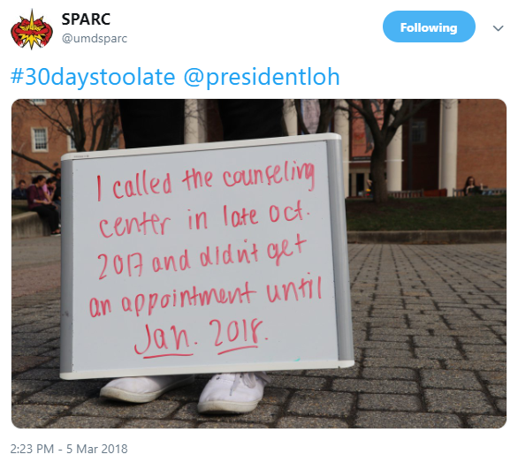

Mental Health Funding Matters
One in 25 Americans are living with a serious mental illness.
What is UMD doing for the mental health of its students?
“I felt panicked,” said Buskirk. “When faced with the possibility of not having my medication for a while, it was terrifying.”

Funding Sources
When sophomore English and government and politics major Reid Buskirk showed up to the University Health Center, he was expecting to see his psychiatrist for a refill of his manic depression medication. Instead, he was told that his appointment was cancelled and would have to wait two weeks to reschedule.
“I felt panicked,” said Buskirk. “When faced with the possibility of not having my medication for a while, it was terrifying.”
Sophomore Reid Buskirk shares his experience with mental illness on campus. Source: UMD Department of Resident Life.
The University of Maryland has various mental health resources on campus, including counseling and psychiatric services. While psychiatric services at the University Health Center are funded by an annual $82 student fee, the Counseling Center is fully funded by the state government.
The counseling service budget is $2,348,578. The Pepsi Corporation has awarded the center grants that cover approximately 10% of its budget, while the state covers the rest of it.
This budget covers the salaries of 17 psychologists, one care manager, two triage counselors, two seasonal psychologists and four full-time doctoral interns. Students have eight free individual counseling sessions per year, but many students wait over a month to been seen.
Mental Health at UMD
In February 2018, a student group called Scholars Promoting and Revitalizing Care launched the #30DaysTooLate campaign to draw attention to the excessive wait times at the Counseling Center.
SPARC launches its social media campaign called #30DaysTooLate in February 2018
to draw attention to long wait times at the UMD Counseling Center.
Senior Kristen Brockett serves as president of SPARC and has worked to advocate for mental health resources on campus. She thinks there can always be more mental health resources added, but the university needs to specifically focus on adding more staff psychologists.
Junior psychology major Erin Hill serves as the administrator of the Help Center, an on-campus peer crisis hotline. She offers free peer counseling in-person and over the phone for students struggling with mental health.
“I don’t think the student body’s needs are being fully met and I think there are so many factors that contribute to that,” Hill said. “I think by nature, a college campus itself will almost always fail to meet student needs in this way because of the limited resources available.”
Counseling Center Associate Director Ted Pickett attributes the influx of students seeking counseling services to the success of destigmatizing mental illness among young adults.
“We didn’t expect it to work so well that people would actually come in, but those efforts have actually been effective,” Pickett said.
How many intake appointments does the Counseling Center conduct per academic year?
During the last academic year, the Counseling Center had 2,606 students come in for an intake appointment, according the Counseling Center’s 2017-2018 annual report. This was a 16% increase from the prior three-year average.
Source: Data collected from the UMD Counseling Center's 2012-2018 annual reportsWho seeks counseling services at UMD?
Additionally, the annual report data shows that 51% of students seeking counseling services are white, 20% are Asian, 16% are Black, 6% are Hispanic and 5% are multi-racial.
Source: UMD Counseling Center Annual Report 2017-2018Although many students have voiced their desire for more staff psychologists, the Counseling Center has never been at full staff capacity, said Counseling Center Director Sharon Kirkland-Gordon.
“I can’t remember a time we were fully staffed,” she said. “Some staff members have died unexpectedly in prior years or they leave for a different opportunity.”
The center just hired three staff psychologists who will start seeing students in the fall, putting the Counseling Center at full staff capacity. Then, Kirkland-Gordon wants to reevaluate the ratio of staff psychologists to students to see how the student body’s needs are being met.
A National Crisis
Suicide is the second leading cause of death among college students, according to Active Minds, a nonprofit advocacy organization for mental health. With 39% of college students experiencing a serious mental health issue, they are more likely to talk about mental health than older generations.
Even though mental illness is starting to become destigmatized, only 44% of adults and less than 20% of children and teenagers with diagnosed mental illnesses get the treatment they need. One in five adults will have a diagnosable mental illness. Half of the world population will experience a mental health condition in their lifetime.
The UMD Counseling Center is located in the Shoemaker Building on South Campus.
Source: UMD Division of Student Affairs.
For those struggling at the University of Maryland, mental health resources are available across campus. Th University Health Center offers psychiatricservices for students needing medication for their mental illness. The Counseling Center, located in the Shoemaker Building, offers eight free counseling sessions for every student. After students run out of their free session, they will be referred to an off-campus provider. Off-campus psychiatric services can cost well over $100 per one-hour session, so a more afforable option is the Psychology Clinic on campus. The clinic is staffed by doctoral psychology students, so they offer sliding scale price depending on how much an individual can afford. The Department of Recreation and Wellness offers a variety of free exercise classes for UMD students, including yoga classes, which is a commonly stress reduction technique.
If you or someone you know if struggling with mental illness or suicidal thoughts, contact the National Suicide Prevention Lifeline at 1-800-273-8255.